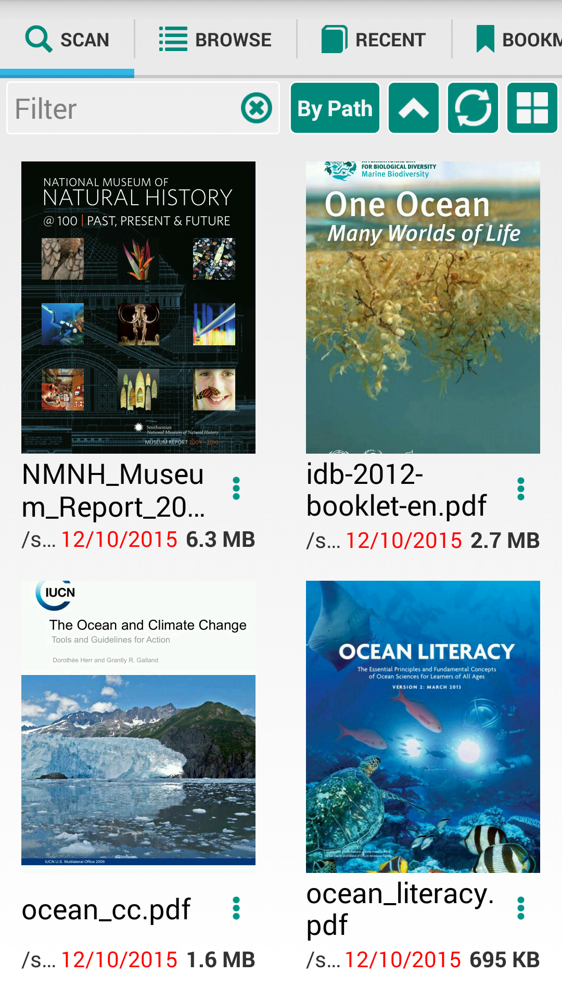

About



This Web site and PDF Tutorial placed on github, everyone can modify it or translate to another language
The link for PDF Tutorial source (index.html)
It's possible to read books in three modes: normal(usual) way, light mode or musical mode
Normal or usual way is most rich and functional, pages in continuous way, it's the best choose for users who read a lot of time, with many good features like annotatoins, auto scroll
Ligth mode for usrers who prefer sliding swipe pages
Musician special mode for musician or music bands for best performance, for easy auto scroll music sheets
Scan section are displaying all finded pdf and djvu files from the device (search paths are congiruable)
 You can manage view - to see books as grid or as list
You can manage view - to see books as grid or as list
It's possible to filter books by name or by extension
You can sort all books result by Path, by Name, by Size or by Date ascending or descending
To refresh search result
Clicking on the file appear dialog
You can select one of three modes: Normal, Ligth, Musician
If you click on Remember view mode, next time book will open in way you prefer
In the Preference tab it's possible to clear prefer mode or change to other one
Book menu add you more features on every books
Ligth to open book in ligth mode
Musician to open book in musician mode
Open with to open current book in other applications
Share to share/send book file to other applications
Export Bookmarks to export book bookmarks as text (for example for Clipboard, Gmail, Viber, Keep etc)
Delete to remove book from sd card
Share Page to share first page as image to Gmail, Viber, Instagram or into other applicatoins
Export bookmarks as text from book example
Share first page as image example
From this section you can navigate in sd card file systems
Only pdf and djvu files are displaying inside folders
Show current path, open main sd card, and change views
Home icon - is navigate to root dir on divice scdard
Grid/List- to change books view
Show you parent folder
On every file it's possible to open "Book menu dialog" described above
To display recent open books ordered by date, last opened books are dislyaing above
You can change books view in Grid or List perspective
To delete book from list press red cross on the right
To display user bookmars for every books
New bookmarks are on the
To delete book from list press red cross on the right
Scan Device for new Books
You can add/remove sdcard folders to search books, only this folders are displaying on Scan section
Theme Style
It's possible to switch beetween Ligth and Black Themes
Change Buttons Colors
You can change button colors and UI colors in all application (for example Blue)
Nigth mode with green buttons
Customize Font and Background colors

It's possible to make it different for day and nigth modes
Screen Orientation
May be Automatic depends of the device position, or Landscape(Horizontal) or Portrait(Vertical)
Full Screen
Turn Off/On full screen
Keys
Configure device keys (for example Volume Up/ Down buttons) or custom ebook readers buttons for swipe to next or previous page during reading
In the PREFERENCES what is the purpose of the Keys section?
This settings need for some book reader, like nook or kinde to configure hardware keys for swipe pages.
What is the purpose of the Reverse check-box in Preferences?
For example, If you want to change order of volume key to swipe pages. Up-Next page or Reverse Up-Previous page
What is the mouse scroll speed for?
If you use USB or Bluetooth mouse you can configure how fast will be scroll by wheel inside document